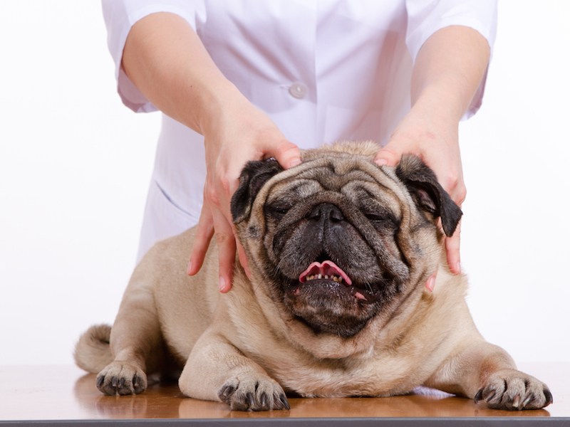

Medicina Integrativa: Uma Abordagem Holística e Personalizada
A medicina integrativa para pets é uma abordagem inovadora que combina o melhor da medicina veterinária convencional com terapias complementares e alternativas. Esse método holístico reconhece que cada animal é único e que seu bem-estar depende de um equilíbrio entre o corpo, a mente e o espírito.
Na medicina integrativa, tratamentos tradicionais, como medicamentos e cirurgias, são usados em conjunto com terapias naturais, como acupuntura, fitoterapia, homeopatia, massoterapia, e alimentação balanceada. O objetivo é promover a cura de forma mais completa, abordando não apenas os sintomas, mas também as causas subjacentes das doenças.
Essa abordagem valoriza a prevenção, o fortalecimento do sistema imunológico e o apoio ao corpo do animal para que ele possa se curar naturalmente. Em vez de tratar apenas a doença, a medicina integrativa busca melhorar a qualidade de vida do pet como um todo, proporcionando um cuidado personalizado e adaptado às necessidades individuais de cada animal.
A medicina integrativa também enfatiza a importância do ambiente e do estilo de vida na saúde do pet. Ela considera fatores como dieta, exercício, saúde emocional e o vínculo entre o animal e seus tutores, promovendo práticas que contribuem para o bem-estar geral.
Optar pela medicina integrativa para o seu pet significa escolher uma abordagem que respeita a sabedoria natural do corpo e promove uma cura profunda e duradoura. Na VetSelene, acreditamos que essa é a chave para uma vida longa, saudável e equilibrada para os nossos companheiros de quatro patas.
Tipos de medicina integrativa
A medicina veterinária integrativa engloba aspectos físicos, psicológicos, comportamentais e sociais. Para isso, faz uso de diversas abordagens terapêuticas, com a associação de tratamentos convencionais com terapias complementares como:
Acupuntura: tratamento da medicina tradicional chinesa que utiliza finas agulhas para promover estímulos em pontos meridianos que atuam no sistema nervoso central;
Aromaterapia: promove benefícios para a saúde e bem-estar do cachorro ou gato a partir das propriedades medicinais de substâncias químicas sintetizadas pelas plantas (óleos essenciais);
Cromoterapia: utiliza a cor das luzes do espectro solar para promover o bem-estar;
Fitoterapia: tratamento realizado com o uso de plantas medicinais;
Homeopatia: terapia baseada na diluição de substâncias oriundas dos reinos animal, vegetal ou mineral;
Osteopatia: envolve a avaliação e tratamento de disfunções motoras que levam a problemas de saúde e afetam a qualidade de vida;
Ozonioterapia: uso do gás de ozônio que tem diversos efeitos no organismo, como: fortalecimento do sistema imunológico, efeito analgésico e antiinflamatório, antimicrobiano, melhora oxigenação tecidual, cicatrizante, anti neoplásico, entre outros, sendo indicado para diversas doenças;
Quiropraxia: é uma terapia manual direcionada para o ajuste de vértebras, extremidades e suturas craniais dos cães ou gatos;
Reiki: é uma terapia energética realizada para alinhamento dos chakras por meio da imposição das mãos;
Terapia Cannabica: tratamento realizado com o uso de óleos de Cannabis, Indicado para diversas doenças como: epilepsia, câncer, dor crônica, entre outras.
Se interessou pela Medicina Veterinária Integrativa? A VetSelene conta com uma equipe de veterinários especializados nas terapias integrativas.
Nossos Atendimentos
| Serviços | Segunda à Sexta | Sábados | Domingos e Feriados | Valores por Sessão |
|---|---|---|---|---|
| Acupuntura | 09h - 12h | 9h - 11h | 10h - 13h | R$ 150,00 |
| Aromaterapia | 12h - 15h | 11h - 13h | - | R$ 130,00 |
| Cromoterapia | 15h - 18h | 13h - 15h | - | R$ 70,00 |
| Fisioterapia | 09h - 19h | 09h - 16h | 10h - 14h | R$ 170,00 |
| Homeopatia | 09h - 12h | 09h - 11h | 10h - 13h | R$ 40,00 |
| Osteopatia | 12h - 15h | 11h - 13h | - | R$ 150,00 |
| Ozonioterapia | 15h - 18h | 13h - 15h | - | R$ 180,00 |
| Quiropraxia | 09h - 12h | 09h - 11h | - | R$ 120,00 |
| Reiki | 12h - 15h | 11h - 13h | - | R$ 190,00 |
| Terapia Cannabica | 15h - 18h | 13h - 15h | - | R$ 400,00 |
Agende uma avaliação para o seu pet!